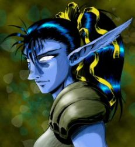

1er Août 2018
3ème jour
de la Décade du Lapin ( Lune de l'Esprit ) -
Accueil
Histoire
Chronologie officielle
Programme à venir
Récits
Légendes de Kirin Tor
Personnages
Célébrités
Guildes
Outils
Calendrier
Calendrier Illustré
Mod d'interface
Informations
Historiens
FAQ
Liens
Crédits
Les légendes de Kirin Tor
wiz
Mail
:
==> Afficher les personnages de wiz
Duvnarel

Age
: 10000
Sexe
: Femme
Race
: Elfe
Faction
: Alliance
Formation
: Druide
Plus d'infos sur Duvnarel >>>
Lire les 38 récits de Duvnarel >>>
Prikat
Age
: 75
Sexe
: Homme
Race
: Nain
Faction
: Alliance
Formation
: Guerrier
Plus d'infos sur Prikat >>>
Lire les 13 récits de Prikat >>>
Rovinal
Age
: 4
Sexe
: Homme
Race
: Elfe
Faction
: Alliance
Formation
: Druide
Plus d'infos sur Rovinal >>>
Lire les 4 récits de Rovinal >>>
Taleyran
Age
: 31
Sexe
: Homme
Race
: Humain
Faction
: Alliance
Formation
: Voleur
Plus d'infos sur Taleyran >>>
Lire les 9 récits de Taleyran >>>
Jarhod
Age
: 37
Sexe
: Homme
Race
: Humain
Faction
: Alliance
Formation
: Démoniste
Plus d'infos sur Jarhod >>>
Lire les 4 récits de Jarhod >>>